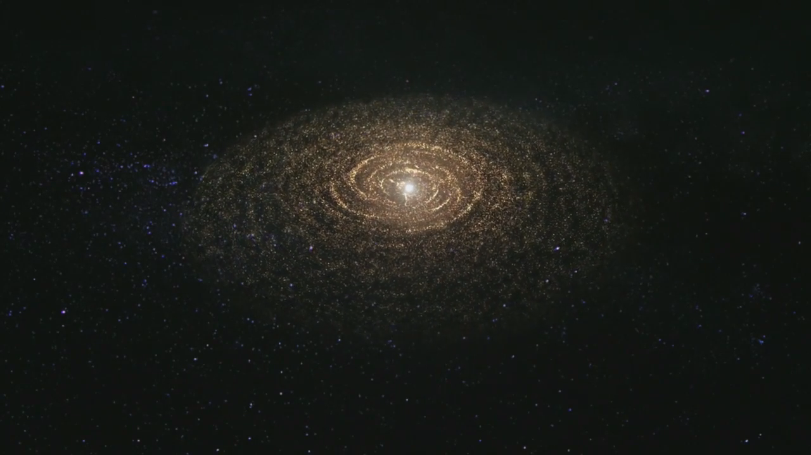

Образование Солнечной системы
Новые исследования редкого типа метеоритов показывают, что вещество, находящееся вблизи Солнца, достигло внешней Солнечной системы, как раз когда планета Юпитер очистила дыру в диске от пыли и газа, из которых образовались планеты. Результаты, опубликованные в журнале Proceedings of the National Academy of Sciences, добавляют к новому пониманию того, как формировалась наша Солнечная система и как планеты формируются вокруг других звезд.
Общепринятая теория о том, как формируются планеты, состоит в том, что они образуются из диска пыли и газа, который вращается вокруг новообразованной звезды. Данные о составе этого протопланетного диска в нашей собственной Солнечной системе получены из хондритов, типа метеоритов, состоящих из более мелких частиц, или хондр, которые собирались вместе подобно космическому пыльному зайчику.
"Если мы понимаем транспорт, мы можем понять свойства диска и сделать вывод о том, как были построены планеты", - сказал Цинчжу Инь, профессор наук о земле и планетах Калифорнийского университета в Дэвисе и соавтор статьи.
Материал в хондритах чрезвычайно стар, представляя собой остатки пыли и мусора, которые остались от очень ранней Солнечной системы. Дополнительные доказательства получены из горных пород Земли и Луны, а также образцов космической пыли и кометного материала, собранных миссией "Звездная пыль" и другими космическими зондами.
Исследователи могут приблизительно определить, где и когда образовались эти метеориты, измеряя соотношения изотопов таких элементов, как кислород, Титан и хром внутри них.
Предыдущие работы лаборатории Инь и других ученых показали, что метеориты по своему составу делятся на две большие группы. Считается, что углеродистые метеориты возникли во внешней Солнечной системе. Не углеродистые метеориты образовались из диска ближе к Солнцу, где были испечены углеродные и другие летучие соединения.
Почему не произошло большего перемешивания, если все планеты образовались из одного и того же протопланетного диска? Объяснение заключается в том, что, когда Юпитер сформировался раньше, он пропахал брешь в диске, создавая барьер для движения пыли, сказал Инь. Астрономы с помощью радиотелескопа ALMA в Чили наблюдали то же явление в протопланетных дисках вокруг других звезд.
Однако некоторые метеориты, по-видимому, являются исключением из этого общего правила с более широкой смесью компонентов.
Инь, научный сотрудник Калифорнийского университета в Дэвисе Кертис Уильямс и их коллеги провели детальное исследование изотопов из 30 метеоритов. Они подтвердили, что они делятся на две различные группы: неуглеродистые хондриты, а также другие, более распространенные типы метеоритов; и углеродистые метеориты.
Затем они изучили отдельные хондры из двух хондритных метеоритов: метеорита Альенде, упавшего в Мексике в 1969 году, и метеорита Кароонда, упавшего в Австралии в 1930 году.
Оказалось, что эти метеориты содержат хондры как из внутренней, так и из внешней Солнечной системы. Какой-то материал из внутренней Солнечной системы, должно быть, сумел пересечь барьер Юпитера, чтобы срастись с внешними хондрами Солнечной системы в метеорит, который миллиарды лет спустя упадет на Землю.
Как же так? Есть несколько возможных механизмов, сказал Уильямс.
- Во-первых, движение по средней плоскости диска продолжалось, хотя его должен был остановить Юпитер, - сказал он. - Во-вторых, ветры во внутренней Солнечной системе могли переносить частицы через юпитерианский промежуток."
Любой из этих механизмов также может быть ответственен за материал внутренней Солнечной системы, который также был обнаружен в кометах миссией "Звездная пыль".